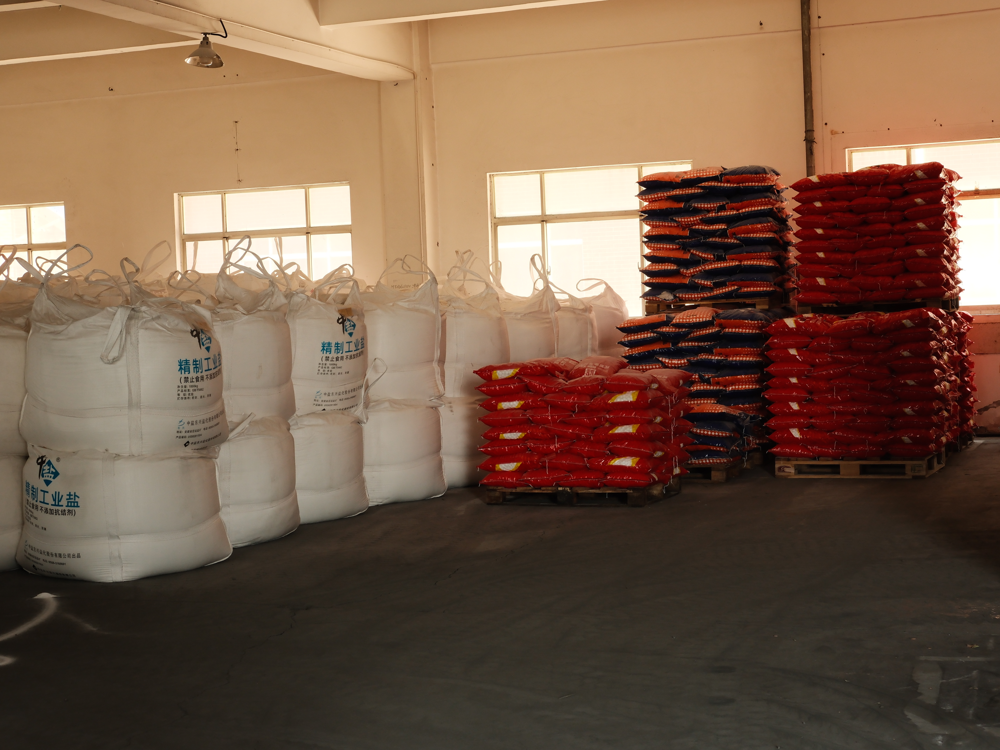
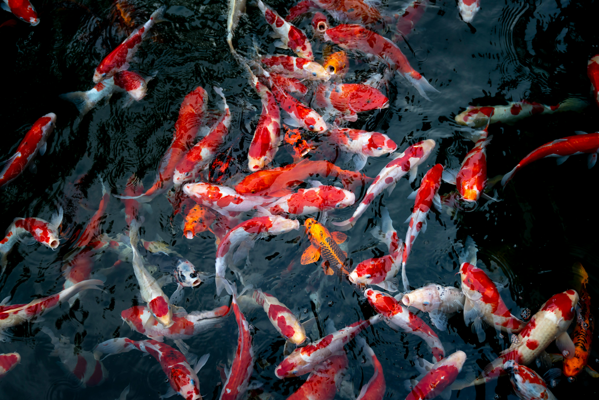

1. Industrial Use
Water softener salt is essential in large-scale industrial systems to prevent scale buildup caused by hard water, which reduces energy efficiency, clogs pipes, and shortens equipment lifespan.
Typical Applications:
- Boilers in textile factories, food processing plants, or chemical industries
- Cooling towers in HVAC systems
- Water purification pretreatment before reverse osmosis (RO)
- Car wash stations to avoid water spotting and scaling

2. Household Use
In home softening systems, water softener salt helps remove calcium and magnesium from hard water, providing softer water that is better for appliances, skin, and plumbing.
Typical Applications:
- Whole-house water softeners
- Dishwashers with salt compartments
- Bathroom systems to prevent scale
- Laundry machines for better detergent performance

3. Fish / Aquaculture Use
High-purity salt tablets or coarse salt are used in fish farms to balance osmotic pressure, prevent infections, and control parasites in aquaculture environments.
Typical Applications:
- Freshwater fish farms to reduce toxicity
- Shrimp hatcheries for pond preparation
- Recirculating Aquaculture Systems (RAS)
- Transport tanks for live fish shipment